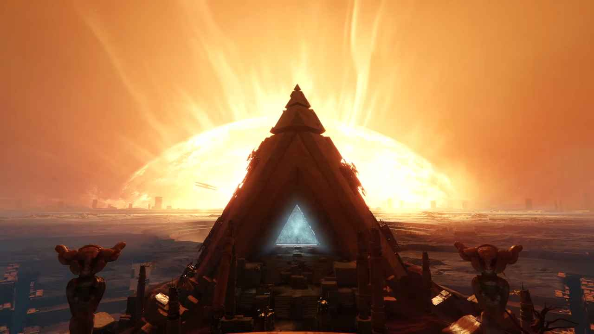
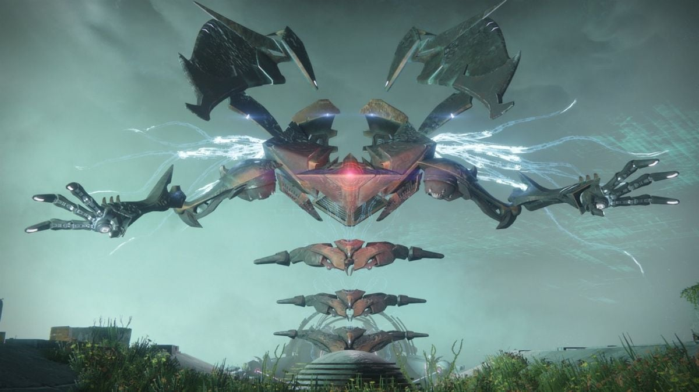

Osiris byl legendární člen Vanguardu, a jedním z jeho hlavních velitelů, dlouho před invazí Rudého Legionu. V přesně neurčené době, před výpukem Rudé Války, se Osiris začínal zabývat čím dál více druhem mimozemských bytostí známými jako Vex - Robotické bytosti se schopnostmi manipulace a cestování v čase, pracující v kolektivech s jedním známým cílem - vymazání všech forem života ze všech možných realit, a stát se nejvyšší (a také jedinou) formou života. Jejich vliv na Sluneční soustavu byl doposud malý, až nepatrný. Osiris ve svých posledních dnech ve městě začal zpochybňovat Travelera, jeho Světlo a vliv na lidstvo. Také si začal získávat téměř kultovní oblibu, nyní známou pod oficiálním názvem Cult of Osiris. Nakonec byl z města vyhoštěn za svoji víru a studie týkající se Vex. Uchýlil se k Merkuru, kde bylo lidstvu známo, že Vex působí v nejsilnější koncentraci, kam ho následovali jeho stoupenci. Ti se na Merkuru téže usadili, Osirida ale na povrchu planety nikdy nespatřili. Krátce po Ghaulově smrti a probuzení Travelera Osiridova žákyně Ikora Rey, která se ujala vedení po jeho vyhoštění, od svého učitele obdržela nouzovou zprávu: Vex se na Merkuru snaží otevřít portál do alternativní reality, kde Traveler, ani jeho Světlo, neexistuje. Zdá se, že tento kolektiv Vex, známý také jako Sol Collective, očekávali Travelerovo probuzení, a nyní se ho znaží využít.


Ikora předá Osiridovu zprávu našemu Strážci, který se následně na Merkur vydá. Na povrchu potkáváme vůdce již zmíněného kultu, kultistu jménem Brother Vance. Ten nám odhalí místo Vex brány, kde byl Osiris naposledy spatřen. Také zmiňuje, že brána slouží jako portál do tzv. Nekonečného Lesa; hlavní místo operací kolektivu Sol Collective. Poté, co Strážce s jeho Ghostem bránou projdou, ocitnou se uprostřed liminální nicoty - Nekonečného Lesa. V tuto dobu po našem boku následuje Sagira, Osiridův Ghost, který byl od svého Strážce odloučen po Osiridově vyhoštění. Napříč několika misí v Lese se dovídáme více a více o tom, kde by se Osiris mohl nacházet, a také, kdo nebo co vede Vex na Merkuru. Sagira nás informuje, že je pravděpodobné, že Osiris prošel několika parelelními realitami, aby se dostal k jeho cíli; najít kolektivní Vex Mysl, která ovládá a poroučí všem ze Sol Collective. Tím také naznačuje, že náš Strážce bude muset udělat to samé. Po pár prozkoumaných realitách se dozvídáme, že Mysl tohoto Vex kolektivu se nazývá Panoptes - masivní Vex typu lidstvem nazývaný Hydra, který narozdíl od mytologické hydry má jen jednu hlavu, ale narozdíl od Vex Hydry má dvě plně funkční paže. Společně se Sagirou se nám podaří najít primární realitu, ve které Panoptes pracuje, a nakonec i samotnou Nekonečou Mysl, kterou objevíme při její konfrontaci s naším dlouho pohřešovaným velitelem. Společně s Osiridem se nám podaří Panoptes zničit, a celý Sol Collective rozptýlit napříč realitami a soustavami. Jedno je ale jisté: Vex nikdy nevymizí úplně.